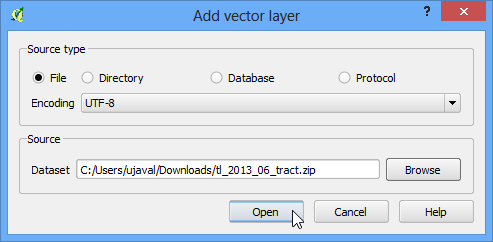
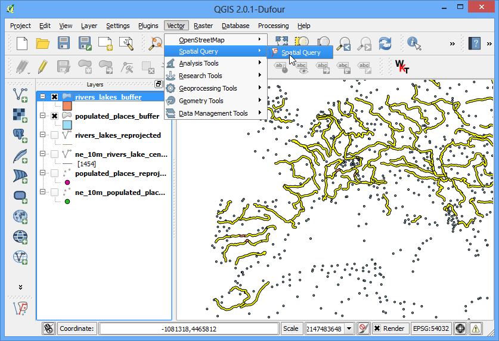
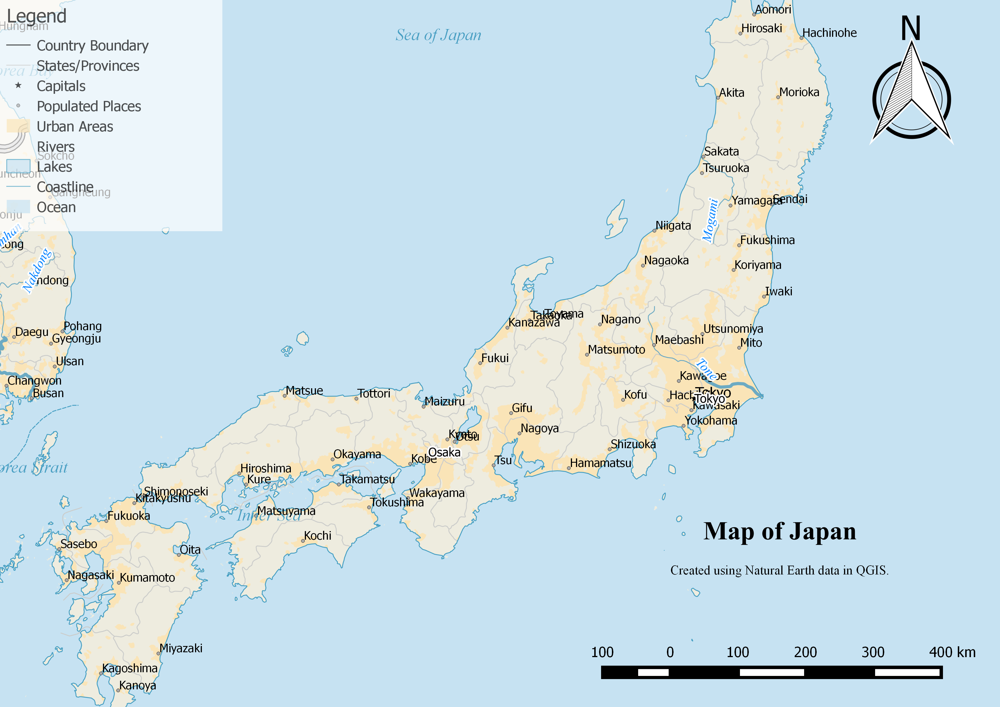

Kaarten op Leaflet Web met qgis2leaf
[ Download PDF
A4
Letter ]
Waarschuwing
Plug-in qgis2leaf wordt niet langer actief ontwikkeld. De functionaliteit van deze plug-in is opgenomen in een nieuwe plug-in, genaamd qgis2web.
Leaflet is een populaire open-source Javascript-bibliotheek voor het bouwen van toepassingen voor webkaarten. de plug-in qgis2leaf verschaft een eenvoudige manier om uw kaart van QGIS te exporteren naar een functionerende, op Leaflet gebaseerde, webkaart. Deze plug-in is een handige manier om te beginnen met webkaarten en een interactieve webkaart te maken vanuit uw statische GIS gegevenslagen.
Overzicht van de taak
We zullen een Leaflet webkaart van de vliegvelden in de wereld maken.
Andere vaardigheden die u zult leren
SQL-argument CASE gebruiken in Veldberekening om nieuwe veldwaarden te maken, gebaseerd op verschillende voorwaarden.
Aangepaste SVG-pictogrammen zoeken en gebruiken in QGIS.
Procedure
Installeer de plug-in qgis2leaf door te gaan naar . Onthoud dat de plug-in momenteel is gemarkeerd als experimental, dus u dient Ook de experimentele plug-ins tonen in Plug-ins Extra te selecteren. (Bekijk Plug-ins gebruiken voor meer details over het installeren van plug-ins in QGIS)

Pak het gedownloade bestand ne_10m_airports.zip uit. Open QGIS en ga naar . Blader naar de plaats waar de bestanden werden uitgepakt en selecteer ne_10m_airports.shp. Klik op OK.

Gebruik, als de laag ne_10m_airports eenmaal is geladen, het gereedschap Objecten identificeren om op een object te klikken en de attributen daarvan te bekijken. We zullen een kaart met vliegvelden maken, waarbij we de vliegvelden classificeren in 3 categorieën. Het attribuut type zal handig zijn bij het classificeren van de objecten.

Klik met rechts op de laag ne_10m_airports en selecteer Open attributentabel.

klik, in het dialoogvenster van de attributentabel, op de knop Bewerken aan/uitzetten. Klik, als de laag in de modus bewerken staat, op de knop Open veldberekening.

We willen een nieuw attribuut maken, genaamd type_code waar we de belangrijkste vliegvelden de waarde 3 geven, gemiddelde vliegvelden de waarde 2 en alle andere de waarde 1. We kunnen het argument CASE gebruiken en een expressie schrijven die zal zoeken naar de waarde van het attribuut type en een attribuut type_code zal maken dat is gebaseerd op de voorwaarde. Selecteer het vak Nieuw veld aanmaken en voer type_code in als de Naam voor veld. Selecteer Geheel getal (integer) als Type voor veld. Voer, in het venster Expressie, de volgende tekst in.
CASE WHEN "type" LIKE '%major%' THEN 3
WHEN "type" LIKE '%mid%' THEN 2
ELSE 1
END

Terug in het venster Attributentabel zult u aan het einde een nieuwe kolom zien. Verifieer dat uw expressie juist heeft gewerkt en klik op de knop Bewerken aan/uitzetten om de wijzigingen op te slaan.

Nu zullen we de laag met vliegvelden opmaken met behulp van het nieuw gemaakte attribuut type_code. Klik met rechts op de laag ne_10m_airports en selecteer Eigenschappen.

Selecteer de tab Stijl in het dialoogvenster Laag-eigenschappen. Selecteer de stijl Categorieën uit het keuzemenu en kies type_code als de Kolom. Kies ene kleurenbalk van uw keuze en klik op Classificeren. Klik op OK om terug te gaan naar het hoofdvenster van QGIS.

Hier zult u een netjes opgemaakte kaart van de vliegvelden zien. Laten we deze exporteren om een interactieve webkaart te maken. Ga naar .

Klik, in het dialoogvenster QGIS 2 Leaflet, op Get Layers om de vernieuwde lagen lijst te verkrijgen. Selecteer de optie Full screen`om een webkaart op volledig scherm te krijgen. Kies :guilabel:`layer extent als de Extent van de geëxporteerde kaart. Kies een Output project folder op uw systeem waar de plug-in de uitvoerbestanden zal wegschrijven. Klik op OK.

ga naar de map met de uitvoer op uw schijf als het exporteren is voltooid. Open het bestand index.html in een browser. U zult een interactieve webkaart zien die een replica is van de kaart van QGIS. U kunt op de kaart in- en uitzoomen en die verschuiven en ook op een object klikken om een pop-upvenster te verkrijgen met informatie over de attributen. U kunt de inhoud van deze map naar een webserver kopiëren om een webkaart te hebben met volledige mogelijkheden.

Nu zullen we enkele geavanceerde mogelijkheden van deze plug-in verkennen die u in staat zullen stellen de kaart verder aan te passen. Zoals u heeft gezien bevatte de pop-up alle attributen van de objecten. Sommige attributen zijn niet erg nuttig en over het algemeen ziet de pop-up er lelijk uit. We kunnen de standaard pop-up vervangen door ons eigen aangepaste HTML om het veel beter te maken. Dat wordt bereikt door de aangepaste HTML toe te voegen in een kolom, genaamd html_exp. klik met rechts op de laag ne_10m_airports en selecteer Open attributentabel.

klik, in het dialoogvenster van de attributentabel, op de knop Bewerken aan/uitzetten. Klik, als de laag in de modus bewerken staat, op de knop Open veldberekening.

Selecteer het vak Nieuw veld aanmaken en voer html_exp in als de naam voor veld. Kies Tekst (string) als het Type voor veld. Kies, omdat we een nogal lange tekenreeks met HTML zullen maken, 200 als de Veldbreedte. Voer de volgende expressie in het gebied Expressie in. De complex uitziende expressie definieert eenvoudigweg een HTML-tabel en vervangt celwaarden van de attributen iata_code, name en type. Selecteer Uitvoer voorvertoning om er voor te zorgen dat de expressie juist is.
concat('<h3>', "iata_code", '</h3><table>', '<tr><td>Airport Name: <b> ',
"name", '</b></td></tr><tr><td>Category: <b> ', "type",
'</b></td></tr></table>')
Notitie
De indeling shapefile kan maximaal 254 tekens in een veld bevatten. Als u langere teksten in het veld wilt opslaan dient u een andere indeling te kiezen.

Terug in het venster Attributentabel zult u aan het einde een nieuwe kolom zien. Verifieer dat uw expressie juist heeft gewerkt en klik op de knop Bewerken aan/uitzetten om de wijzigingen op te slaan.

Exporteer de kaart nu opnieuw met behulp van .

Kies de opties zoals eerder.

Ga naar de map voor de uitvoer zodra de export is voltooid. U zult een submap hebben met het huidige tijdstempel. Zoek naar het bestand index.html daarin en open dat in een browser. Klik op een object en bekijk de pop-up. U zult zien dat het er een stuk netter en informatiever uitziet.

Een andere nuttige mogelijkheid van de plug-in qgis2leaf is de mogelijkheid om een aangepast pictogram te specificeren om te gebruiken met de webkaart. Dit kan worden bereikt door het pad naar het aangepaste pictogram te specificeren in een veld, genaamd icon_exp. We zullen ene nieuwe laag maken die alleen de belangrijkste vliegvelden bevat en die opmaken met een aangepast SVG-pictogram. Zoek naar het gereedschap Selecteren van objecten gebruik makend van een expressie op de werkbalk.

Voer de hieronder staande expressie in en druk op Selecteren om alle belangrijke vliegvelden te selecteren.

Klik met rechts op de vliegvelden ne_10m_airports en selecteer Opslaan als....

Noem, in het dialoogvenster Vectorlaal opslaan als..., het uitvoerbestand major_airports.shp. Selecteer Voeg opgeslagen bestand toe aan kaart en klik op OK.

Als de laag major_airports eenmaal is geladen in QGIS, klik er met rechts op en selecteer Open attributentabel.

klik, in het dialoogvenster van de attributentabel, op de knop Bewerken aan/uitzetten. Klik, als de laag in de modus bewerken staat, op de knop Open veldberekening.

Voer, in het dialoogvenster Veldberekening, icon_exp in als Naam voor veld. Maak het een type Tekst (string). Voer, in het gebied Expressie, de volgende expressie in.

Sla uw bewerkingen op door te klikken op de knop Bewerken aan/uitzetten in de Attributentabel.

Open de plug-in qgis2leaf vanuit . Klik op de knop Get Layers om beide lagen te verkrijgen uit QGIS. er zijn vele verschillende vooraf gedefinieerde tegellagen beschikbaar voor basiskaarten. Voor deze kaart zullen we iets anders proberen en Stamen Watercolor laden als de Basemap. Klik op OK.

Zoals u zich zult herinneren hebben we airport.svg gespecificeerd als het pictogram voor de vliegvelden. We mieten dat pictogram handmatig toevoegen aan de map voor de uitvoer. QGIS bevat een grote collectie pictogrammen. Op Windows staan deze pictogrammen in . Het pad kan variëren, afhankelijk van uw platform en type installatie. Zoek die map op en kies een pictogram dat u leuk vindt. Voor onze kaart proberen we het pictogram amenity=airport.svg in de categorie transport.

Kopieer en plak dit pictogram in de map voor uitvoer die u heeft gespecificeerd bij het exporteren van de kaart. Hernoem het naar airport.svg.

Open nu het bestand index.html dat zich in de map bevindt. U zult een prachtige basiskaart zien met onze aangepaste pictogrammen voor de belangrijkste vliegvelden. Merk ook het lagenpaneel op aan de rechter bovenkant dat het beheer van de weergave van de lagen bevat voor beide lagen.

Hope this tutorial gives you a head start in creating web maps. Below is the
live interactive map created for this tutorial.